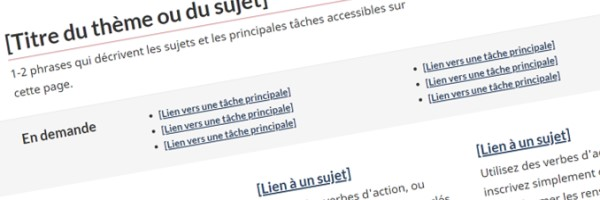

Liens de menu d’accueil – Guide de conception axée sur l’utilisateur de l’ARC
Il s’agit d’une configuration pour présenter des ensembles de liens et de descriptions affichés dans des blocs concis. Chaque lien de menu d’accueil comporte un titre et un bref résumé du contenu de la page de destination. Des liens de menu d’accueil clairs, bien rédigés, précis et distincts les uns des autres aident les utilisateurs à choisir le bon chemin pour accomplir leurs tâches.
Sur cette page
Quand l’utiliser
- Utilisez ce modèle pour fournir des liens vers des sujets ou des contenus de destination liés à la page où il se trouve.
- Utilisez-le lorsque l'objectif principal de la page est de fournir des choix clairs pour naviguer vers des tâches.
- A utiliser dans les configurations ou modèles suivants :
- Page d'accueil institutionnelle (obligatoire)
- Page de sujets (obligatoire)
- Page d'index avec navigation de style métro (obligatoire)
- Liens vers un sous-sujet (facultatif)
- Page de campagne (facultatif)
- Étapes stylisées (facultatif)
Quoi éviter
- N'utilisez pas de liens de menu d’accueil pour les listes simples qui ne nécessitent pas de description fournissant plus de contexte (par exemple, une liste de provinces et de territoires).
- N'utilisez pas un format « lien de menu d’accueil » sans respecter les règles spécifiques de longueur et de style.
- Ne répétez pas les liens qui se trouvent dans le modèle En demande (si vous utilisez les deux modèles sur la même page).
- N'utilisez pas d'icônes ou d'images dans le modèle pour mettre l'accent sur les liens de menu d’accueil.
Contenu et conception
Voici les règles et les options pour créer des liens de menu d’accueil et des directives pour créer un ensemble cohérent de liens de menu d’accueil.
Structure d'un lien de menu d’accueil
Un lien de menu d’accueil comporte un titre de lien au format hyperlien et une description de lien au format texte et est présenté de la façon suivante :
Titre du lien : idéalement 45 caractères
Description idéalement de 120 caractères ou moins, liste avec virgules ou phrase, ne terminez pas par un point
Titre des liens
- But
-
- Fournit une très courte description de la page à laquelle il renvoie.
- Aide l'utilisateur à décider si cette page l'aidera à accomplir sa tâche.
- Longueur
-
- La limite de caractères optimale pour les liens est de 45 caractères (y compris les espaces) dans les deux langues officielles
- La limite peut aller jusqu’à 75 caractères (avec les espaces).
- Conseil :
- Visez une version anglaise ne dépassant pas 35 caractères (y compris les espaces) pour permettre à la version française de ne pas dépasser 45 caractères (y compris les espaces).
- Contenu
-
- Le texte du lien doit être logique dans le contexte de la page.
- Il doit être descriptif, unique dans la page, et clairement distinct des autres liens sur la page.
- Il n’est pas obligé de correspondre exactement au titre de la page de destination.
- Il n’est pas obligé d’être unique dans tout le site Canada.ca.
- Format
-
- Mettez la première lettre du premier mot en majuscule et celle de tous les noms propres également.
- Ne mettez pas de ponctuation à la fin du texte du lien (par exemple, « Comment présenter une demande de financement » au lieu de « Comment présenter une demande de financement? »).
- Ajoutez un lien vers la page de destination.
- Amélioration - Étiquettes : Vous pouvez ajouter des étiquettes au titre du lien pour indiquer le statut du programme ou du service s'il a récemment changé, par exemple « Nouveau » (utilisez l’étiquette d’information) ou « Fermé » (utilisez l’étiquette de danger).
Consultez : Étiquettes
- Options de style
-
- Choisissez un style cohérent pour les liens de menu d’accueil d'une page, tels que les sujets, les produits ou services, les actions ou les groupes d'utilisateurs.
- Sujets
- Exemple :
- Arts et médias
- Histoire et patrimoine
- Commerce et placements culturels
- Sport
- Exemple :
- Produits ou services
- Exemple :
- Régime enregistré d'épargne-retraite
- Comptes d'épargne libre d'impôt
- Régime enregistré d'épargne-études
- Régime enregistré d'épargne-invalidité
- Premier compte d'épargne logement
- Exemple :
- Actions
- Exemple :
- Informer l'ARC de la date du décès
- Demander la prestation de décès du RPC ou de la RRQ
- Représenter une personne décédée
- Demander un certificat de décharge
- Exemple :
- Groupes d'utilisateurs
- Exemple :
- Particuliers
- Entreprises
- Organismes à but non lucratif
- Non-Canadiens
- Fiscalistes
- Exemple :
Description des liens
- But
-
- Fournit plus de détails et de précision sur la portée du lien.
- Aide l'utilisateur à décider si cette page l'aidera à accomplir sa tâche en lui donnant un peu plus d'informations que le texte du lien.
- Longueur
-
- Les descriptions de lien ne doivent pas dépasser 120 caractères (y compris les espaces) dans les deux langues officielles.
- Conseil :
- Viser une version anglaise ne dépassant pas 100 caractères (avec espaces) pour permettre une version française de moins de 120 caractères (avec espaces).
- Contenu
-
- Décrivez ce que l'utilisateur peut trouver ou faire sur la page à laquelle le lien renvoie.
- Le style recommandé est d’énumérer les mots clés ou les expressions clés séparés par des virgules plutôt que des phrases complètes.
- N’utilisez pas de phrases d’introduction comme « Comprend… », « Renseignements sur… » ou « Apprenez-en plus au sujet de… ».
- Ne répétez pas des renseignements déjà fournis dans le titre du lien.
- N’incluez pas de messages promotionnels.
- Format
-
- N’incluez pas de liens.
- Ne mettez pas de ponctuation à la fin de la description.
- N'ajoutez pas de formatage supplémentaire aux descriptions (par exemple, gras, puces).
- Options de style
-
- Liste des liens ou des titres de la page suivante (style recommandé), séparée par des virgules
- Conseil : N'incluez pas le mot « et » avant le dernier élément de votre liste.
- Vous gagnez quelques caractères.
- Vous n'avez pas à vous demander si une virgule d'Oxford est nécessaire pour que la phrase soit compréhensible.
- Exemple :
- Comptes d'épargne libre d'impôt, régimes d'épargne enregistrés, régimes de pension communs, administrateurs de régimes
- Conseil : N'incluez pas le mot « et » avant le dernier élément de votre liste.
- Description des tâches que l'utilisateur peut accomplir
- Exemple :
- Produire sa déclaration d'impôt, obtenir une trousse d'impôts, vérifier l'état de son remboursement d'impôt
- Exemple :
- Description de ce que vous pouvez obtenir et des personnes admissibles
- Exemple :
- Paiement mensuel pour les familles admissibles ayant des enfants de moins de 18 ans
- Exemple :
- Amélioration - Menu déroulant :
- Les menus déroulants sont autorisés à la place d’une description de lien dans des circonstances particulières :
- s’ils permettent de fournir un accès à un grand nombre d’éléments au même niveau (par exemple, des listes de pays ou d’espèces)
- si la page de destination comprend principalement une liste de liens, et que l’on peut entièrement la remplacer par le menu déroulant
- Les menus déroulants sont autorisés à la place d’une description de lien dans des circonstances particulières :
- Liste des liens ou des titres de la page suivante (style recommandé), séparée par des virgules
Ordre et organisation des liens de menu d’accueil
- Fondé sur la demande
- La priorisation est fondée sur la demande (par exemple, en fonction de l’analytique Web), avec des liens à forte demande s’affichant avant ceux à faible demande.
- Amélioration : Liste numérotée
- Utilisez les menus d’accueil thématiques séquentiels et numérotés si les liens doivent être suivis dans un ordre étape par étape (par exemple, confirmer l’admissibilité, s’inscrire, puis imposer la TPS/TVH).
- Utilisez ce style pour permettre aux personnes de sauter les étapes facultatives ou non applicables ou les étapes déjà effectuées.
- Utilisez le modèle des étapes stylisées lorsque vous présentez des liens de menu d’accueil séquentiels sur une page.
- Consultez : Étapes stylisées
- Amélioration : Utiliser des sous-titres
- Utilisez-les pour regrouper les liens et les descriptions qui sont très similaires, au cas où il ne serait pas logique de déplacer le groupe dans une page de sous-sujet.
- Utilisez-les pour éviter la surcharge de renseignements; idéalement pas plus de 9 liens avec des descriptions par sous-titre.
- Consultez Titres et sous-titres pour obtenir des directives sur l’écriture de bons sous-titres.
- Combinaison des styles précédents, le cas échéant; toutefois, limitez l’application pour éviter des ensembles trop complexes de liens et de descriptions.
Dans tous les cas, le classement prioritaire est comme suit :
- Dans une présentation à colonne unique, le classement prioritaire est de haut en bas.
- Dans une présentation à plusieurs colonnes, le classement prioritaire est de gauche à droite, puis de haut en bas.
Combiner les titres et les descriptions des liens
Choisissez des styles compatibles pour le titre et la description de votre lien afin d'aider l'utilisateur à accomplir sa tâche.
Choisissez un texte qui distingue un lien de l'autre
L'objectif des liens de menu d’accueil est d'aider l'utilisateur à choisir le meilleur chemin pour accomplir sa tâche. Pour ce faire, rédigez le titre et la description du lien de manière à aider les utilisateurs à déterminer si un lien est pertinent pour eux ou non.
Exemple : Exemples de liens de menu d’accueil pour les prestations
À faire :
Les descriptions de liens fournissent des informations pertinentes sur ce que les utilisateurs peuvent obtenir et sur les personnes admissibles. Les descriptions des liens aident les utilisateurs à faire la distinction entre les différents chemins et tâches.
Allocation canadienne pour enfants
Versement mensuel pour les familles admissibles ayant des enfants de moins de 18 ans
Crédit pour la taxe sur les produits et services/taxe de vente harmonisée (TPS/TVH)
Versement trimestriel pour les personnes à revenu faible et modeste, montant et dates de versement
Prestation dentaire canadienne
Prestation provisoire pour les familles admissibles ayant des enfants de moins de 12 ans
Paiement de l’incitatif à agir pour le climat
Versement trimestriel pour les résidents de l’Alberta, de la Saskatchewan, du Manitoba et de l’Ontario
Allocation canadienne pour les travailleurs
Prestation pour les personnes qui travaillent et qui ont un faible revenu, montants et dates de versement
Prestation pour enfants handicapés
Versement mensuel aux familles qui s’occupent d’un enfant de moins de 18 ans ayant une déficience grave
À ne pas faire :
Les descriptions des liens contiennent un texte presque identique et n'aident pas les utilisateurs à déterminer s'ils sont pertinents pour eux. Au lieu de cela, placez le texte générique comme phrase d'introduction entre l'en-tête et les liens de menu d’accueil.
Allocation canadienne pour enfants
Qui peut faire une demande, comment faire une demande, le montant que vous pouvez obtenir, les dates de paiement
Crédit pour la taxe sur les produits et services/taxe de vente harmonisée (TPS/TVH)
Qui peut faire une demande, comment faire une demande, le montant que vous pouvez obtenir, les dates de paiement
Prestation dentaire canadienne
Qui peut faire une demande, comment faire une demande, le montant que vous pouvez obtenir, les dates de paiement
Paiement de l’incitatif à agir pour le climat
Qui peut faire une demande, comment faire une demande, le montant que vous pouvez obtenir, les dates de paiement
Allocation canadienne pour les travailleurs
Qui peut faire une demande, comment faire une demande, le montant que vous pouvez obtenir, les dates de paiement
Prestation pour enfants handicapés
Qui peut faire une demande, comment faire une demande, le montant que vous pouvez obtenir, les dates de paiement
Utilisez une structure parallèle
Une structure parallèle signifie que les liens de menu d’accueil correspondent les uns aux autres sur le plan grammatical et qu'ils partagent d'autres similitudes fondamentales. Par exemple, utilisez des verbes pour le titre de tous les liens de menu d’accueil de la page ou utilisez des noms pour le titre de tous les liens de menu d’accueil de la page, mais n'incluez pas un mélange des deux.
Exemple : Utilisation d'une structure parallèle pour le texte du lien pour les prestations
À faire :
- Allocation canadienne pour enfants (ACE)
- Crédit pour la TPS/TVH
- Prestation dentaire canadienne
- Paiement de l’incitatif à agir pour le climat
- Allocation canadienne pour les travailleurs
- Prestation pour enfants handicapés
À ne pas faire :
- Faire une demande d’Allocation canadienne pour enfants (ACE)
- Paiement trimestriel du crédit pour la TPS/TVH
- Prestation dentaire canadienne
- Obtenir le paiement de l’incitatif à agir pour le climat
- Aperçu de la prestation pour enfants handicapés
Modèles et configurations complémentaires
-

- Date de modification :